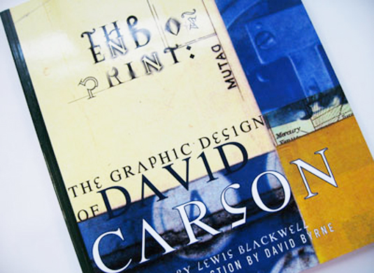
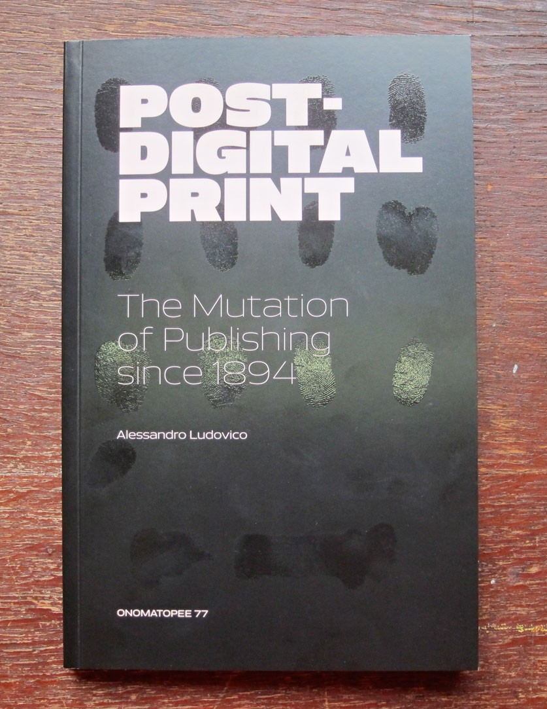
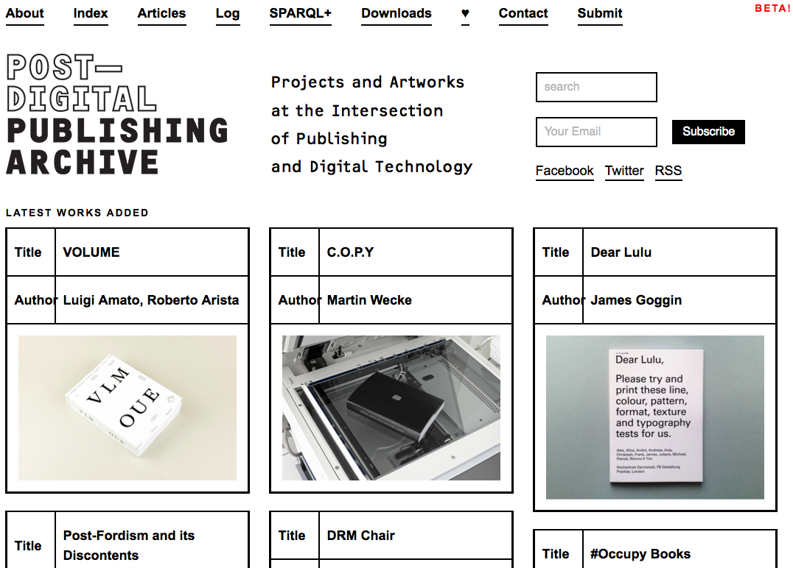

Hybrid Publishing Workflows
Paper vs and print
Print is not dead
It is a book, remember?

The designer David Carson, rising to fame in the 1990ies, ironically called his hefty monograph ‘the end of print’. His books fits among a trend at the time for publishers and young designers to come up with such retrospective books, a geste until then mainly reserved for a select few established designers of advanced age.
Yet if print publishing has stayed around, its role and meaning have changed. In the words of Momus, channeling foundational media theorist Marshall McLuhan (Source): “One of McLuhan’s big ideas was that every medium, at the peak of its power, is inclined to forget that it’s no more than a metaphor, a representation of reality. In its hubris, the medium wants to be reality. At the same time, it wants to portray all previous media as ‘just media’”.
Paper was this medium, the medium through which all other media were represented (think of the traditional museum catalog as an embodiment of this logic). The web has become this medium. The explosion in book-making practices by graphic designers in recent years stresses the particularity of the book as a physical object, made of paper and ink. “The consolation prize for not being the Universal is getting to be the Particular.”
Print and Screens might have taken on different roles in our media society, they are, however, in a constant dialog. Alessandro Ludivico has written ‘Post-Digital Print: The Mutation of Publishing Since 1894’ in an attempt to cut through the dichotomy between paper and electronics, and to chart the the relations, transitions, mixes and hybridisations between the screen and the printed page. Buy the book from our friends at Onomatopee, and download the PDF from our friends at Monoskop.

Another resource, and a wonderful introduction to these issues is Silvio Lorusso’s Post-digital Publishing Archive and its accompanying tumblelog.
The archive presents projects and artworks at the intersection of publishing and digital technology. Many projects deal with the way the physical object of the book is represented digitally (Turning Pages). This digital representation can then become book again (E-book backup). And what happens to the initially fluid realm of the digital text when it encounters the physical finality of the book object (The Iraq War: A History of Wikipedia Changelogs)?

Hybrid Publishing work-flows
So if print is not dead, yet existing in a symbiotic relation with the screen, what does that mean for our workflow when producing publications?
The following schema shows how most small publishers in the cultural field work, and how many of you probably work as well:
After the original text is put into inDesign, proofs are done with PDF’s. The designer directly edits in inDesign. This means that not only the layout is stored in inDesign, but the canonical text ends up being stored there as well.
The problem with this workflow is that the inDesign file is not easily re-usable for other formats. One can generate a PDF, and people have been creating ePUBs with reasonable success in inDesign, but there is no way to generate proper HTML.
Most large publishers therefore follow a different model. Before starting to do the layout, they convert their source document into a format called XML. XML is way of storing documents with tags, just like HTML, except that businesses can make up their own tags that fit their workflow. Publishers might use some existing XML standard, or make up their own.
InDesign allows to read in XML. A certain tag can be coupled to a certain paragraph style. The key in this workflow is that inDesign can watch the XML document for changes, and update the document whenever the XML changes. So instead of correcting text and typos in inDesign, you do it in the XML document. A large publisher might also employ an interface to edit the source document, and a form of archiving and revision control to track the changes.
A publisher will also set up a workflow to convert the XML to HTML, and to ePUB (based in part on the HTML). This workflow is known as ‘single source’, and its largest advantage is that a change in the source text is automatically reproduced throughout all mediums. The downsides however, are also clear. This workflow calls for a lot of technological infrastructure. It requires knowledge within the organisation of myriad different technologies, and most smaller publishers don’t have dedicted technical staff. A large publisher might have parts of this workflow custom built; a small publisher won’t be able to afford this. Finally, even though they use a same source text, the design for the HTML and the print versions are decoupled and have to be imagined seperately—a small publisher might not have the time.
Question: in the schedule the ePub is derived from the XML. But inDesign also knows how to make ePubs. Is that possible in this schema? Answer: Yes this is possible. inDesign makes reasonably good ePubs. It is an attractive solution for small publishers. However, often some post-processing of the ePub is still required. A large publisher will want a dependable workflow with a minimum of post-processing, so they’re probably going to create a custom solution for ePubs.
Question: in this model, the text is shared, but is there a way to get the design out of inDesign? Answer: that’s not easy. The inventive engineers from the German company LeTex have some solutions for this, but this is in no way a straight-forward process. I’m going to work with them for a project at the Winterthur Museum so I’ll let you know how it works out! For now, an easier solution to re-use design is the model we’ll introduce next.
A more feasible workflow, is to have HTML at the core. HTML can both be used as a presentation and a source format. Working on the HTML & CSS gives immediate results, which can be placed online. An ePub file, being HTML files at its core, can be easily generated from the HTML design. This contrasts with working in inDesign, where generating ePubs is a bit clumsy because the program is so tied to fixed paper formats.
To go from HTML to print can alse be rather straightforward. CSS allows one not just to specify specific behaviour for screen sizes, but also to adapt the design for print. With Open Source Publishing we have been doing quite a few projects this way. It is the route I would advise to take for the thesis, as it is the quickest, and the screen version is more important. However, if necessary, HTML also offers a path to inDesign: it can be converted to XML and then form the input for an inDesign document.
HTML and CSS also offer the advantage of being simple, text-based formats that allow collaboration. Class 4A already learned about the collaboration methods employed by software developers, with Git and Github, and class 4B will do so in this block’s coding class.
Your will work on (the design of your) thesis in the form of a series of HTML and CSS files, potentially using JavaScript for interactivity. You will store these files on Github, and you will make sure that you create a stylesheet that creates an appropriate print output and screen display. Optionally, you will be able to use inDesign by feeding in the HTML.
Question: is this a mainstream way of working? Answer: yes and no. Clearly, the two mainstream ways of working are the first two models outlined. The HTML based model we have chosen for the thesis we chose firstly because it fits well the requirements of the thesis development: easy collaboration and a hybrid output (web and print). We use techniques that are already mainstream in the world of hackers, technology activists and scientists. It is no surprise that the big editor adopting this model is O’Reilly, an editor of computer books. They have written a blog article on the subject: ‘HTML5 is the future of book authorship’.
One of the best resources about these kind of hybrid workflows is the site for the Digital Publishing Toolkit, a project by the Institute of Network Cultures in collaboration with the HvA and the Willem de Kooning Academy. Next to the myriad technical articles on the blog, the videos for the ‘Off the Press’ conference are well worth watching. Interesting are the the case studies (1, 2, 3, 4), where various designers explain how they went about creating electronic books in relation to the problems specific to each project.